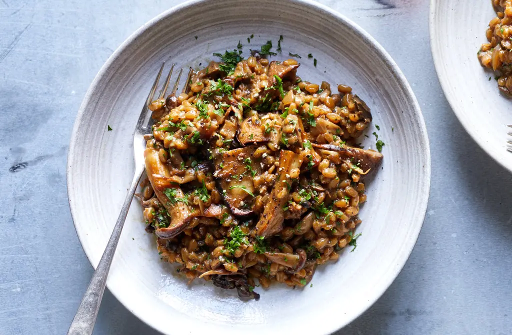

Farro with Mushrooms

Description
Farro is chewier than Italian rice and doesn’t release starch when it’s cooked,
so there’s no need to stir it the way you’d stir a risotto.
This hearty dish has a rich, earthy flavor. Although it takes about twice as long as a risotto to cook,
it doesn’t require tending.
Ingredients
- ½ounce (½ cup, approximately) dried porcini mushrooms
- 1 quart chicken stock or vegetable stock
- 1½ cups farro
- 2 tablespoons extra virgin olive oil
- ½ cup finely chopped onion
- 1 pound cremini mushrooms or wild mushrooms (or a mixture of the two), cleaned, trimmed and sliced
- Salt to taste
- 2 large garlic cloves, green shoots removed, minced
- 2 teaspoons chopped fresh rosemary
- ½ cup dry white wine
- Freshly ground pepper to taste
- 1 to 2 ounces Parmesan cheese, grated (¼ to ½ cup)
- ¼ cup chopped fresh parsley